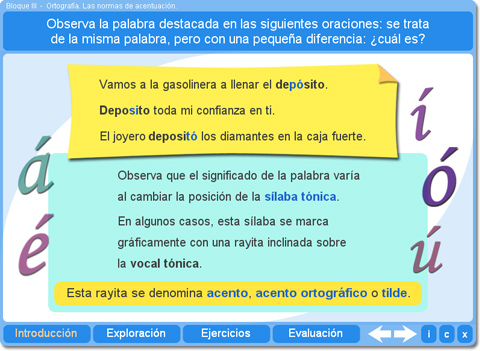
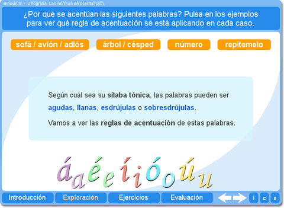
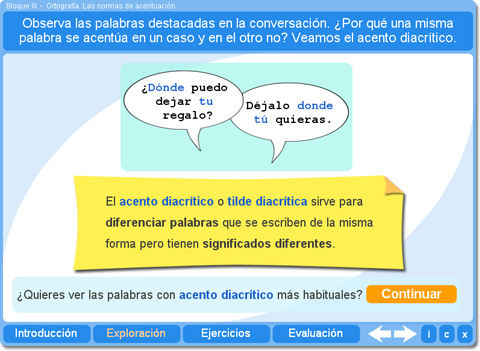
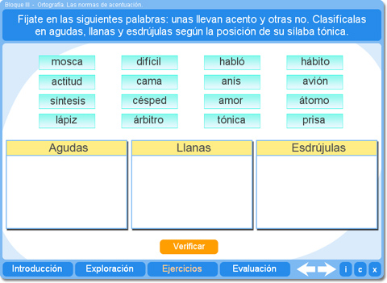
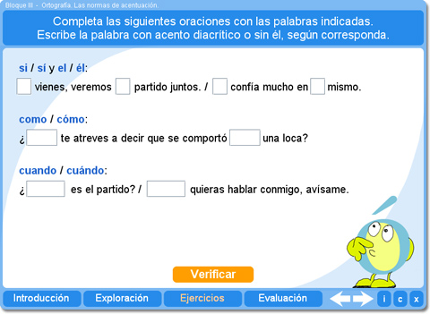
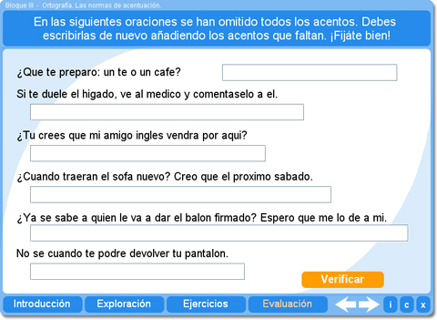

Objetivo
Permitir el repaso de las normas generales de acentuación y del acento diacrítico, y ofrecer ejercicios para practicar la ortografía de la tilde.
Instrucciones generales
Se puede navegar entre los apartados con el menú de la parte inferior. Este menú aparece a lo largo de todo el interactivo y conserva su funcionalidad.

También se puede navegar por las escenas por medio de las flechas de navegación que aparecen en el lado inferior derecho del interactivo. Dentro de los apartados Exploración y Ejercicios es necesario utilizar estas flechas para acceder a las escenas sucesivas de dichos apartados.

En la parte inferior derecha del interactivo se encuentran los siguientes botones:
| Muestra la documentación del interactivo. | |
| Despliega los créditos correspondientes a este interactivo. | |
| Cierra el interactivo. |
Contenidos
Introducción
Permite que el alumno descubra la importancia de la sílaba tónica y la función del acento para marcarla.

Exploración 1
Expone las reglas generales de acentuación de las palabras agudas, llanas, esdrújulas y sobresdrújulas.

Exploración 2
Presenta la función del acento diacrítico y muestra los ejemplos más habituales.

Ejercicio 1
El alumno puede practicar la identificación de la sílaba tónica de distintas palabras.

Ejercicio 2
El alumno puede practicar sus conocimientos acerca del acento diacrítico.

Ejercicio 3
El alumno debe reescribir palabras con la tilde en la posición adecuada para practicar las normas generales de acentuación.

Evaluación
Permite valorar los conocimientos del alumno sobre las normas generales de acentuación y el uso del acento diacrítico.

| Los materiales aquí presentados utilizan el applet Descartes Web 2.0. | |

|
Los contenidos de esta unidad didáctica están bajo una licencia de Creative Commons. |